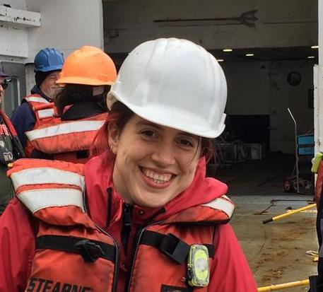

Valeria Cortés Rivas
I'm a geophysicist working on advancing the understanding of subduction zone processes and crustal structure using active-source seismology, gravimetric data, and flexural modeling.
I'm a geophysicist working on advancing the understanding of subduction zone processes and crustal structure using active-source seismology, gravimetric data, and flexural modeling.
Ph.D. Candidate
Northern Arizona University
Master of Science in Geophysics
University of Chile
Bachelor of Science in Geophysics
University of Chile
I'm interested in subduction zones and hotspot settings. Currently, I'm studying the main controls of megathrust slip style in subduction zones, as well as the consequences of strain partitioning due to oblique subduction. During my master's I worked on hotspots and their resulting impact in crustal structure.
vc553@nau.edu